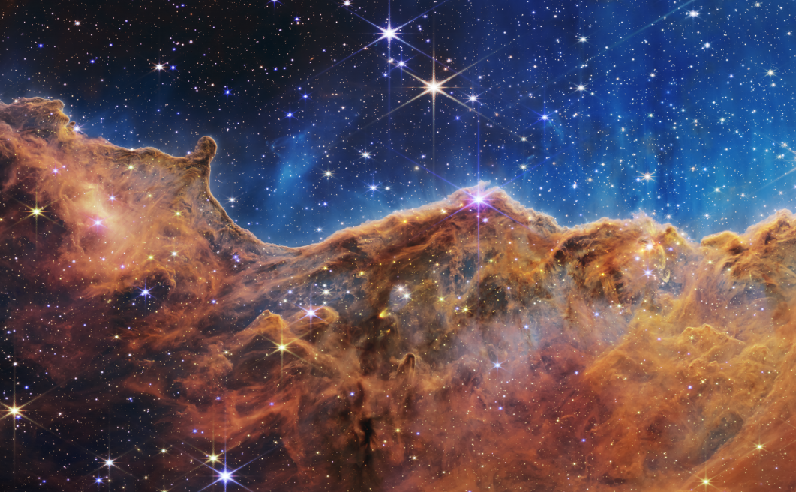
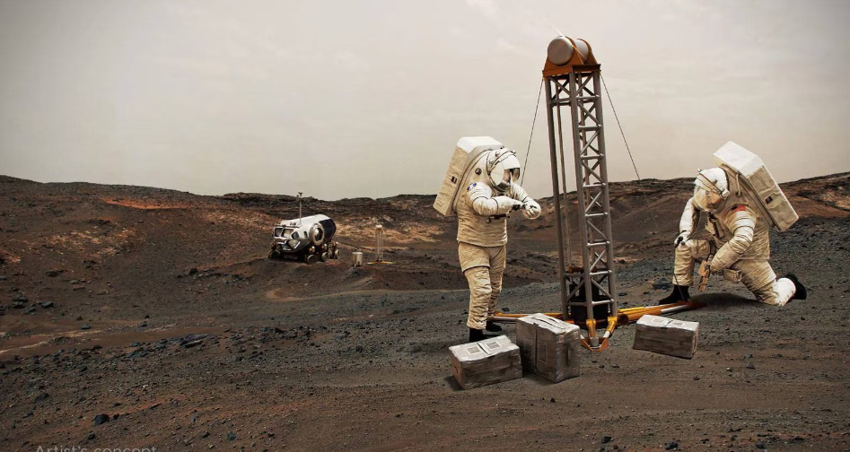

El amanecer de una nueva era en la astronomía ha comenzado mientras el mundo ve por primera vez las capacidades completas del telescopio espacial James Webb de la NASA, en asociación con la Agencia Espacial Europea (ESA, por sus siglas en inglés) y la Agencia Espacial Canadiense (CSA, por sus siglas en inglés). El conjunto completo de las primeras imágenes a todo color y los datos espectroscópicos del telescopio, que descubren un conjunto de características cósmicas que habían sido esquivas hasta ahora, fueron publicados el martes y están disponibles en:
Si bien los científicos ya sabían que en Marte hay agua, lo que lo vuelve un planeta con potencial para una visita de seres humanos, un nuevo mapa revela los sitios donde se ubican estas reservas de agua. Se trata del proyecto SWIM, de mapeo de hielo y agua subsuperficial financiado por la NASA, elaborado utilizando datos de varias misiones de la NASA, incluido el Mars Reconnaissance Orbiter (MRO), Mars Odyssey y Mars Global Surveyor.

Autor:Valeria Yunga
Fecha:1 de Noviembre del 2023